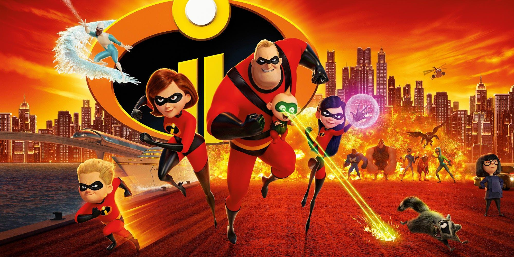

About "Elastigirl" aka Helen Parr
Elastigirl is an awesome superhero, superwife and supermom of three. She can stretch her body to do just about anything.
Elastigirl with family and friends
Elastigirl's Characteristics
- Streches her body any way she wants
- Great wife
- Awesome mom
- Good sense of humor
- Always the sensible adult in the marriage
Family and friends
Write some information about family and friends. Click links below to read more about each of them:
- HUSBAND: Bob Parr "Mr. Incredible"
- OLDEST CHILD: Violet Parr
- MIDDLE CHILD: Dashiell Robert Parr "Dash"
- BABY: Jack-Jack Parr
- FAMILY FRIEND: Lucius Best "Frozone"